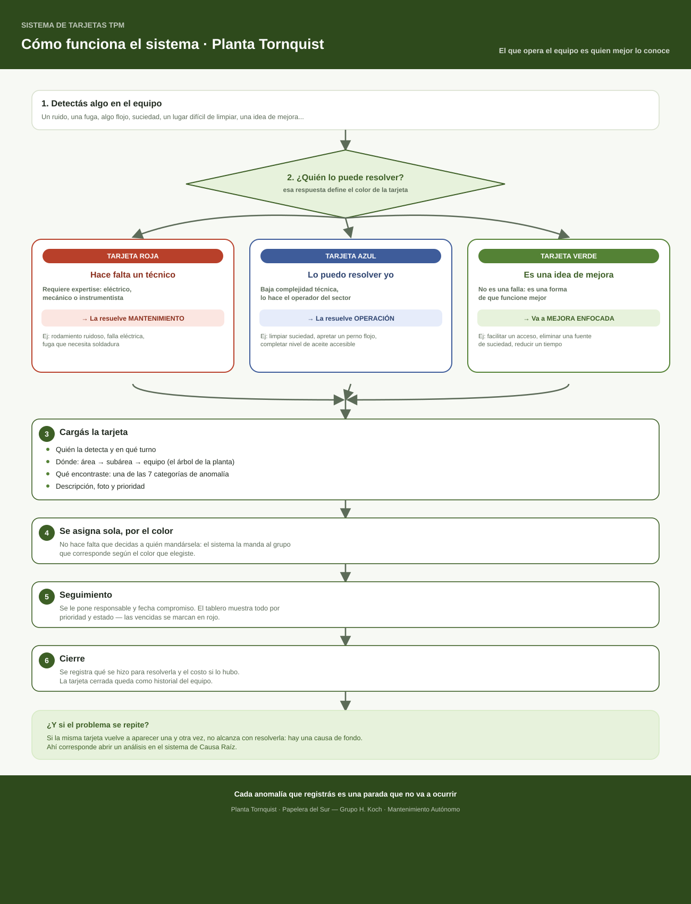

La guía completa en un solo lugar, para revisar cuando tengas dudas. De "vi algo en el equipo" a "quedó resuelto y registrado".
Es la pregunta que más ayuda a planificar. Si no estás seguro, marcá "No sé": lo define mantenimiento.
| Respuesta | Cuándo |
|---|---|
| ▶ En marcha | Ajuste exterior, limpieza fuera de zona de riesgo, cambio de algo sin partes en movimiento ni energía peligrosa. Se hace en el turno. |
| ■ Requiere parada | Hay que abrir guardas, bloquear energía (LOTO), desarmar, cambiar piezas en movimiento o trabajar en zona de riesgo. Va al plan de la próxima parada. |
El color no describe qué tan grave es. Describe quién la resuelve. Es lo primero que elegís al cargar, y de ahí en más el sistema se encarga.
| Si... | Color | La resuelve | Ejemplos |
|---|---|---|---|
| Para resolverlo hace falta un técnico | ROJA | Mantenimiento | Rodamiento ruidoso, falla eléctrica, fuga que necesita soldadura |
| Lo podés resolver vos en el turno | AZUL | Operación | Limpiar suciedad, apretar un perno flojo, completar nivel de aceite |
| No es una falla, es una idea de mejora | VERDE | Mejora Enfocada | Facilitar un acceso, eliminar una fuente de suciedad, reducir un tiempo |
El mismo flujo, de punta a punta. Podés hacer zoom (Ctrl + rueda, o pellizcar en el celular) o descargarlo para imprimir y pegar en el sector.

Elegís el color y el sistema la asigna al grupo que corresponde. Esa es toda la decisión.
Área → subárea → equipo. Es el mismo árbol que usan EHS y Causa Raíz, así los tres sistemas hablan del mismo equipo.
Queda registrado qué se encontró, qué se hizo, quién y cuándo (cada cambio va al Historial). Con el tiempo, eso es la memoria técnica del equipo.
Una tarjeta resuelta queda "a verificar" hasta que alguien del sector confirma en el equipo que quedó bien.
Si no hay conexión, la tarjeta queda guardada en el celular y se envía sola cuando vuelve la señal.
Cuando la misma tarjeta vuelve una y otra vez, no alcanza con resolverla. Ahí corresponde abrir un análisis de Causa Raíz.